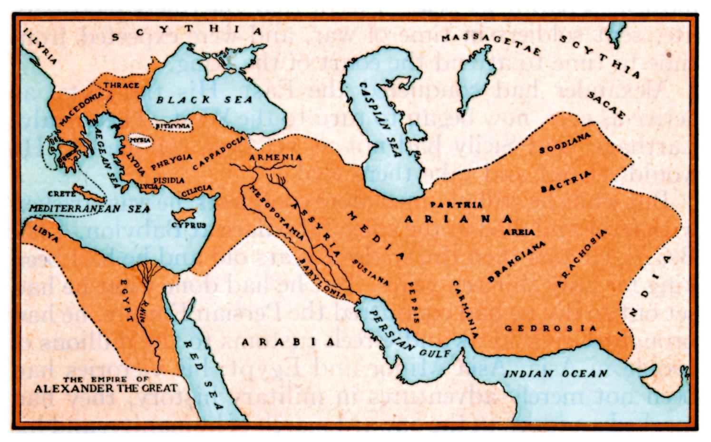

<!doctype html>
<html></html> 
<head>
    <link rel="stylesheet" href="StyleWebsite.css">
    <link rel="stylesheet" href="StyleQuiz.css">
  
</head>
<body> 
    <h2> 
Greece has had a larger and more prominent empire than the Ottomans had, securing major trade  routes and technilogical supremacy. 
That is why Greece deserves the point in the 'Empires' catagory. 
</h2>


</body>